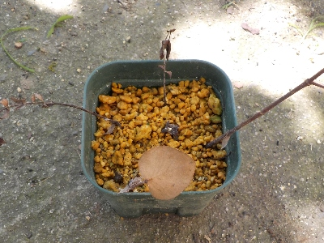
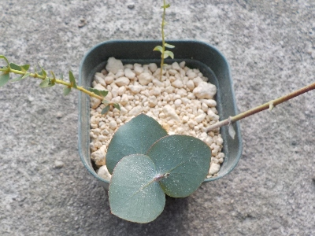

ユーカリの挿し木が茶色くなりました。
2024/08/03

この前まで葉っぱが緑だったので、きっと挿し木に成功したんだろうと思っていましたが、急に茶色になりました。
高温多湿が原因かな？
2024/08/03

この前まで葉っぱが緑だったので、きっと挿し木に成功したんだろうと思っていましたが、急に茶色になりました。
高温多湿が原因かな？
2024/05/20

花束にユーカリが入っていたので挿し木しました。
ユーカリってコアラのイメージしかなかったですが、気にしてみてると民家の庭に植えてあったりするんですね。
香りがいいので我が家にも欲しいな。
ユーカリのいい香りはどうやって活用するんだろう。